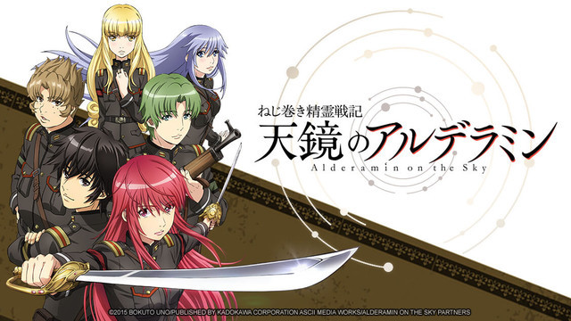
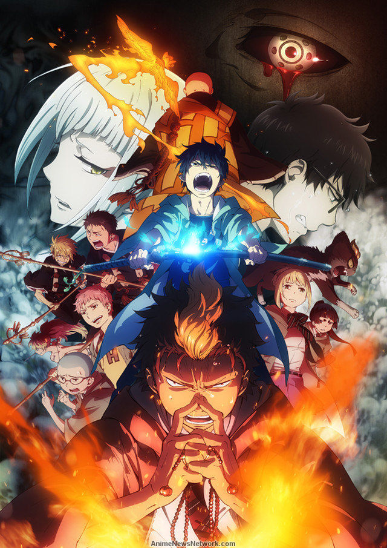
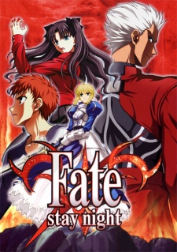
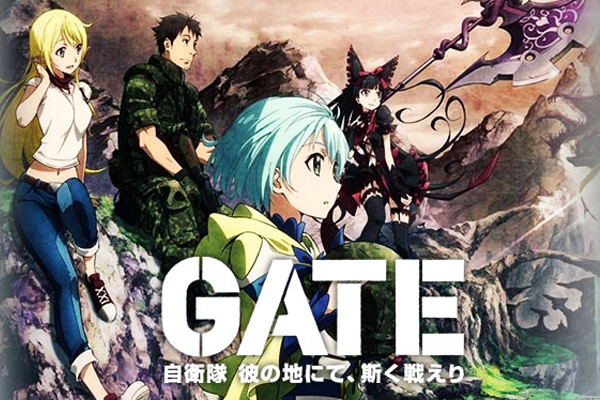
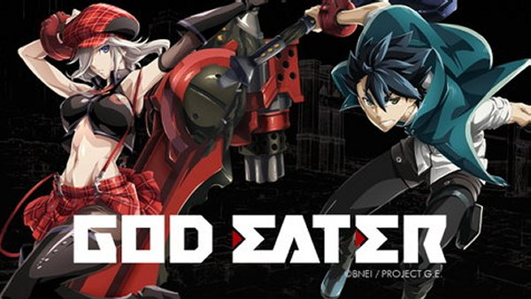
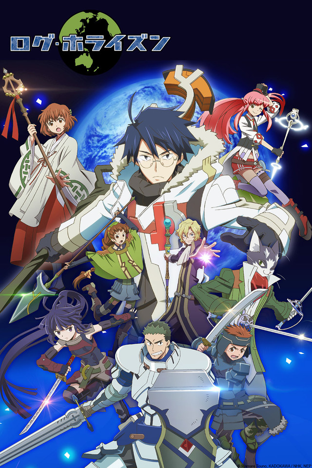
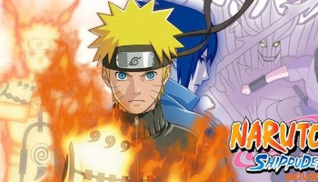
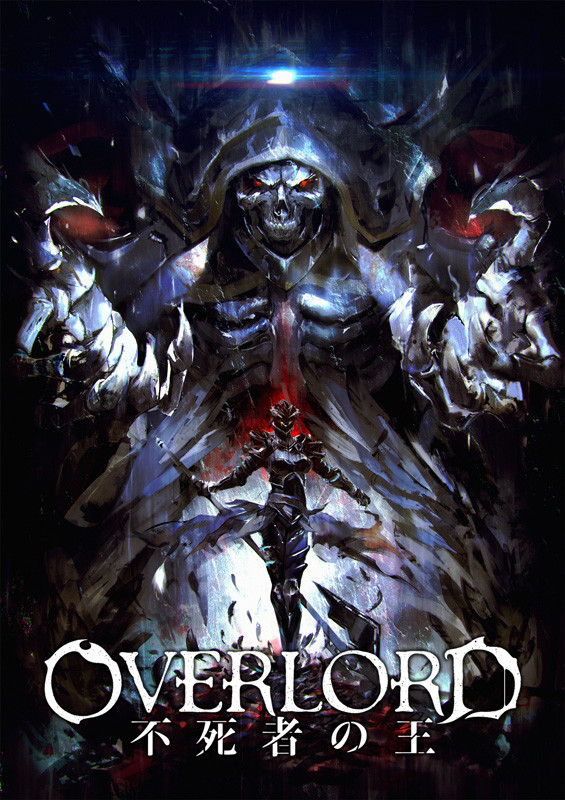

Alderamin on the sky -The huge Katvana Empire is at war with the neighboring Kioka republic. In a corner of the empire, a young man is about be caught up in the flames of war. His name is Ikta Solork. He's lazy, a philanderer, and he hates war. He's about as far from a soldier as you can get. On his way towards the next stage of officer's qualification exams, he and his childhood friend Yatorishino Igsem encounter the nurse trainee Harouma Beckle, Mashuu Tetrijirch, a member of the old military faction, and Torwey Lemion.

Blue Exorcis -Assiah, the realm of humans, and Gehenna, the realm of demons. Normally, these two dimensions would never intersect, but the demons are now intruding on the material world.

Fate Stay/Night -Fuyuki City—a city surrounded by the ocean and the mountains becomes the setting for an age-old ritual. To realize the mythical Holy Grail, which is said to grant any wish from its possessor, seven masters are given seven heroic spirits chosen by the Grail... Each master will enter into a contract with their assigned servants and battle the other masters and servants to the death until only one pair remains… This is the “Holy Grail War.”

Gate -On August 20XX, a gate suddenly appears in Tokyo's Ginza district, unleashing a portal where monsters, medieval knights and other fantasy beings come from another world and wreak havoc on Tokyo. The Japanese Defense Force take action against these monsters and push them back into the "Gate". Third Reconnaissance Team is dispatched to the "Special Region" lead by officer (and otaku) Youji Itami. On their travels, they are joined by a beautiful elf girl who is a survivor from the dragon's rampage and guide the group across the dangerous new world.

God Eater -The huge Katvana Empire is at war with the neighboring Kioka republic. In a corner of the empire, a young man is about be caught up in the flames of war. His name is Ikta Solork. He's lazy, a philanderer, and he hates war. He's about as far from a soldier as you can get. On his way towards the next stage of officer's qualification exams, he and his childhood friend Yatorishino Igsem encounter the nurse trainee Harouma Beckle, Mashuu Tetrijirch, a member of the old military faction, and Torwey Lemion.
Bleach -BLEACH follows the story of Ichigo Kurosaki. When Ichigo meets Rukia he finds his life is changed forever.

Log Horizon -One day, while playing the online game Elder Tales, 30,000 players suddenly find themselves trapped in another world. There, eight-year veteran gamer Shiroe also gets left behind. The trapped players are still alive, but they remain in combat with the monsters. The players don't understand what has happened to them, and they flee to Akiba, the largest city in Tokyo, where they are thrown into chaos. Once proud of his loner lifestyle, Shiroe forms a guild called Log Horizon with his old friend Naotsugu, female assassin Akatsuki and others.

Naruto Shippuden -Naruto Uzumaki wants to be the best ninja in the land. He's done well so far, but with the looming danger posed by the mysterious Akatsuki organization, Naruto knows he must train harder than ever and leaves his village for intense exercises that will push him to his limits.

Overlord -When a popular MMORPG is scheduled to be shut down permanently, veteran player Momonga refuses to log out. As NPCs begin to develop personalities and minds of their own he decides to put his skills to use as the game’s new overlord.